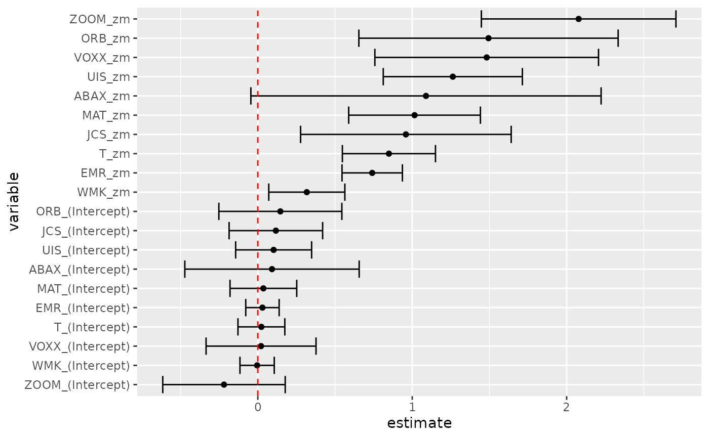

Glance accepts a model object and returns a tibble::tibble()
with exactly one row of model summaries. The summaries are typically
goodness of fit measures, p-values for hypothesis tests on residuals,
or model convergence information.
Glance never returns information from the original call to the modelling function. This includes the name of the modelling function or any arguments passed to the modelling function.
Glance does not calculate summary measures. Rather, it farms out these
computations to appropriate methods and gathers the results together.
Sometimes a goodness of fit measure will be undefined. In these cases
the measure will be reported as NA.
# S3 method for gmm glance(x, ...)
Arguments
| x | A |
|---|---|
| ... | Additional arguments. Not used. Needed to match generic
signature only. Cautionary note: Misspelled arguments will be
absorbed in |
See also
Other gmm tidiers:
tidy.gmm()
Value
A tibble::tibble() with exactly one row and columns:
Degrees of freedom used by the model.
Residual degrees of freedom.
Number of observations used.
P-value corresponding to the test statistic.
Test statistic.
Examples
library(gmm) # examples come from the "gmm" package ## CAPM test with GMM data(Finance) r <- Finance[1:300, 1:10] rm <- Finance[1:300, "rm"] rf <- Finance[1:300, "rf"] z <- as.matrix(r-rf) t <- nrow(z) zm <- rm-rf h <- matrix(zm, t, 1) res <- gmm(z ~ zm, x = h) # tidy result tidy(res)#> # A tibble: 20 x 5 #> term estimate std.error statistic p.value #> <chr> <dbl> <dbl> <dbl> <dbl> #> 1 WMK_(Intercept) -0.00467 0.0566 -0.0824 9.34e- 1 #> 2 UIS_(Intercept) 0.102 0.126 0.816 4.15e- 1 #> 3 ORB_(Intercept) 0.146 0.203 0.718 4.73e- 1 #> 4 MAT_(Intercept) 0.0359 0.110 0.326 7.45e- 1 #> 5 ABAX_(Intercept) 0.0917 0.288 0.318 7.50e- 1 #> 6 T_(Intercept) 0.0231 0.0774 0.298 7.65e- 1 #> 7 EMR_(Intercept) 0.0299 0.0552 0.542 5.88e- 1 #> 8 JCS_(Intercept) 0.117 0.155 0.756 4.50e- 1 #> 9 VOXX_(Intercept) 0.0209 0.182 0.115 9.09e- 1 #> 10 ZOOM_(Intercept) -0.219 0.202 -1.08 2.79e- 1 #> 11 WMK_zm 0.317 0.126 2.52 1.16e- 2 #> 12 UIS_zm 1.26 0.230 5.49 3.94e- 8 #> 13 ORB_zm 1.49 0.428 3.49 4.87e- 4 #> 14 MAT_zm 1.01 0.218 4.66 3.09e- 6 #> 15 ABAX_zm 1.09 0.579 1.88 5.98e- 2 #> 16 T_zm 0.849 0.154 5.52 3.41e- 8 #> 17 EMR_zm 0.741 0.0998 7.43 1.13e-13 #> 18 JCS_zm 0.959 0.348 2.76 5.85e- 3 #> 19 VOXX_zm 1.48 0.369 4.01 6.04e- 5 #> 20 ZOOM_zm 2.08 0.321 6.46 1.02e-10#> # A tibble: 20 x 7 #> term estimate std.error statistic p.value conf.low conf.high #> <chr> <dbl> <dbl> <dbl> <dbl> <dbl> <dbl> #> 1 WMK_(Intercept) -0.00467 0.0566 -0.0824 9.34e- 1 -0.116 0.106 #> 2 UIS_(Intercept) 0.102 0.126 0.816 4.15e- 1 -0.144 0.348 #> 3 ORB_(Intercept) 0.146 0.203 0.718 4.73e- 1 -0.252 0.544 #> 4 MAT_(Intercept) 0.0359 0.110 0.326 7.45e- 1 -0.180 0.252 #> 5 ABAX_(Intercept) 0.0917 0.288 0.318 7.50e- 1 -0.473 0.656 #> 6 T_(Intercept) 0.0231 0.0774 0.298 7.65e- 1 -0.129 0.175 #> 7 EMR_(Intercept) 0.0299 0.0552 0.542 5.88e- 1 -0.0782 0.138 #> 8 JCS_(Intercept) 0.117 0.155 0.756 4.50e- 1 -0.186 0.420 #> 9 VOXX_(Intercept) 0.0209 0.182 0.115 9.09e- 1 -0.335 0.377 #> 10 ZOOM_(Intercept) -0.219 0.202 -1.08 2.79e- 1 -0.616 0.177 #> 11 WMK_zm 0.317 0.126 2.52 1.16e- 2 0.0708 0.564 #> 12 UIS_zm 1.26 0.230 5.49 3.94e- 8 0.812 1.71 #> 13 ORB_zm 1.49 0.428 3.49 4.87e- 4 0.654 2.33 #> 14 MAT_zm 1.01 0.218 4.66 3.09e- 6 0.588 1.44 #> 15 ABAX_zm 1.09 0.579 1.88 5.98e- 2 -0.0451 2.22 #> 16 T_zm 0.849 0.154 5.52 3.41e- 8 0.547 1.15 #> 17 EMR_zm 0.741 0.0998 7.43 1.13e-13 0.545 0.936 #> 18 JCS_zm 0.959 0.348 2.76 5.85e- 3 0.277 1.64 #> 19 VOXX_zm 1.48 0.369 4.01 6.04e- 5 0.758 2.21 #> 20 ZOOM_zm 2.08 0.321 6.46 1.02e-10 1.45 2.71#> # A tibble: 20 x 7 #> term estimate std.error statistic p.value conf.low conf.high #> <chr> <dbl> <dbl> <dbl> <dbl> <dbl> <dbl> #> 1 WMK_(Intercept) -0.00467 0.0566 -0.0824 9.34e- 1 -0.151 0.141 #> 2 UIS_(Intercept) 0.102 0.126 0.816 4.15e- 1 -0.221 0.426 #> 3 ORB_(Intercept) 0.146 0.203 0.718 4.73e- 1 -0.377 0.669 #> 4 MAT_(Intercept) 0.0359 0.110 0.326 7.45e- 1 -0.248 0.320 #> 5 ABAX_(Intercept) 0.0917 0.288 0.318 7.50e- 1 -0.650 0.834 #> 6 T_(Intercept) 0.0231 0.0774 0.298 7.65e- 1 -0.176 0.223 #> 7 EMR_(Intercept) 0.0299 0.0552 0.542 5.88e- 1 -0.112 0.172 #> 8 JCS_(Intercept) 0.117 0.155 0.756 4.50e- 1 -0.281 0.515 #> 9 VOXX_(Intercept) 0.0209 0.182 0.115 9.09e- 1 -0.447 0.489 #> 10 ZOOM_(Intercept) -0.219 0.202 -1.08 2.79e- 1 -0.740 0.302 #> 11 WMK_zm 0.317 0.126 2.52 1.16e- 2 -0.00656 0.641 #> 12 UIS_zm 1.26 0.230 5.49 3.94e- 8 0.671 1.85 #> 13 ORB_zm 1.49 0.428 3.49 4.87e- 4 0.391 2.60 #> 14 MAT_zm 1.01 0.218 4.66 3.09e- 6 0.454 1.58 #> 15 ABAX_zm 1.09 0.579 1.88 5.98e- 2 -0.401 2.58 #> 16 T_zm 0.849 0.154 5.52 3.41e- 8 0.453 1.25 #> 17 EMR_zm 0.741 0.0998 7.43 1.13e-13 0.484 0.998 #> 18 JCS_zm 0.959 0.348 2.76 5.85e- 3 0.0627 1.85 #> 19 VOXX_zm 1.48 0.369 4.01 6.04e- 5 0.530 2.43 #> 20 ZOOM_zm 2.08 0.321 6.46 1.02e-10 1.25 2.91# coefficient plot library(ggplot2) library(dplyr) tidy(res, conf.int = TRUE) %>% mutate(variable = reorder(term, estimate)) %>% ggplot(aes(estimate, variable)) + geom_point() + geom_errorbarh(aes(xmin = conf.low, xmax = conf.high)) + geom_vline(xintercept = 0, color = "red", lty = 2)# from a function instead of a matrix g <- function(theta, x) { e <- x[,2:11] - theta[1] - (x[,1] - theta[1]) %*% matrix(theta[2:11], 1, 10) gmat <- cbind(e, e*c(x[,1])) return(gmat) } x <- as.matrix(cbind(rm, r)) res_black <- gmm(g, x = x, t0 = rep(0, 11)) tidy(res_black)#> # A tibble: 11 x 5 #> term estimate std.error statistic p.value #> <chr> <dbl> <dbl> <dbl> <dbl> #> 1 Theta[1] 0.516 0.172 3.00 2.72e- 3 #> 2 Theta[2] 1.12 0.116 9.65 5.02e-22 #> 3 Theta[3] 0.680 0.197 3.45 5.65e- 4 #> 4 Theta[4] -0.0322 0.424 -0.0761 9.39e- 1 #> 5 Theta[5] 0.850 0.155 5.49 4.05e- 8 #> 6 Theta[6] -0.205 0.479 -0.429 6.68e- 1 #> 7 Theta[7] 0.625 0.122 5.14 2.73e- 7 #> 8 Theta[8] 1.05 0.0687 15.3 5.03e-53 #> 9 Theta[9] 0.640 0.233 2.75 5.92e- 3 #> 10 Theta[10] 0.596 0.295 2.02 4.36e- 2 #> 11 Theta[11] 1.16 0.240 4.82 1.45e- 6#> # A tibble: 11 x 7 #> term estimate std.error statistic p.value conf.low conf.high #> <chr> <dbl> <dbl> <dbl> <dbl> <dbl> <dbl> #> 1 Theta[1] 0.516 0.172 3.00 2.72e- 3 0.178 0.853 #> 2 Theta[2] 1.12 0.116 9.65 5.02e-22 0.889 1.34 #> 3 Theta[3] 0.680 0.197 3.45 5.65e- 4 0.293 1.07 #> 4 Theta[4] -0.0322 0.424 -0.0761 9.39e- 1 -0.862 0.798 #> 5 Theta[5] 0.850 0.155 5.49 4.05e- 8 0.546 1.15 #> 6 Theta[6] -0.205 0.479 -0.429 6.68e- 1 -1.14 0.733 #> 7 Theta[7] 0.625 0.122 5.14 2.73e- 7 0.387 0.864 #> 8 Theta[8] 1.05 0.0687 15.3 5.03e-53 0.919 1.19 #> 9 Theta[9] 0.640 0.233 2.75 5.92e- 3 0.184 1.10 #> 10 Theta[10] 0.596 0.295 2.02 4.36e- 2 0.0171 1.17 #> 11 Theta[11] 1.16 0.240 4.82 1.45e- 6 0.686 1.63## APT test with Fama-French factors and GMM f1 <- zm f2 <- Finance[1:300, "hml"] - rf f3 <- Finance[1:300, "smb"] - rf h <- cbind(f1, f2, f3) res2 <- gmm(z ~ f1 + f2 + f3, x = h) td2 <- tidy(res2, conf.int = TRUE) td2#> # A tibble: 40 x 7 #> term estimate std.error statistic p.value conf.low conf.high #> <chr> <dbl> <dbl> <dbl> <dbl> <dbl> <dbl> #> 1 WMK_(Intercept) -0.0240 0.0548 -0.438 0.662 -0.131 0.0834 #> 2 UIS_(Intercept) 0.0723 0.127 0.567 0.570 -0.177 0.322 #> 3 ORB_(Intercept) 0.114 0.212 0.534 0.593 -0.303 0.530 #> 4 MAT_(Intercept) 0.0694 0.0979 0.709 0.478 -0.122 0.261 #> 5 ABAX_(Intercept) 0.0668 0.275 0.242 0.808 -0.473 0.606 #> 6 T_(Intercept) 0.0195 0.0745 0.262 0.793 -0.126 0.165 #> 7 EMR_(Intercept) 0.0217 0.0538 0.404 0.687 -0.0837 0.127 #> 8 JCS_(Intercept) 0.0904 0.154 0.586 0.558 -0.212 0.393 #> 9 VOXX_(Intercept) -0.00706 0.179 -0.0394 0.969 -0.359 0.344 #> 10 ZOOM_(Intercept) -0.189 0.215 -0.878 0.380 -0.610 0.233 #> # … with 30 more rows# coefficient plot td2 %>% mutate(variable = reorder(term, estimate)) %>% ggplot(aes(estimate, variable)) + geom_point() + geom_errorbarh(aes(xmin = conf.low, xmax = conf.high)) + geom_vline(xintercept = 0, color = "red", lty = 2)